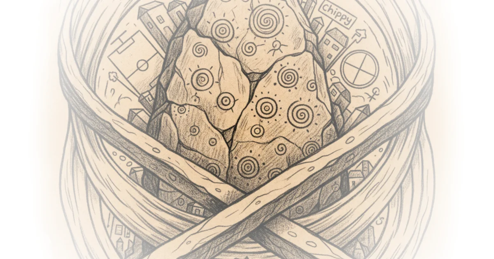

One of Britain's most extraordinary prehistoric artworks isn't in a museum—it's buried underground, deliberately hidden for protection. The Cockno Stone in Clydebank, Scotland, is one of the largest carved rock art panels in Britain: roughly 100 square meters covered in over 100 prehistoric symbols. For decades, these markings confounded archaeologists and sparked wild theories about portals to other dimensions. But the real story is far stranger—and more human—than any conspiracy.
The Discovery
The stone was first found by shepherds in the mid-1880s, who reported it to Reverend Harvey. Word spread quickly through local media and even reached the London Illustrated News. In the 1890s, John Bruce and William Donnelly conducted a formal scientific survey and produced detailed drawings that remain the basis for almost every subsequent illustration of the site.

The stone gained notoriety in the 1930s through Ludvik Mlelenman, an insurance salesman who became president of the Glasgow Archaeological Society. After a mysterious breakdown and disappearance, he reemerged in 1937 with frenetic energy—and an unusual mission. He painted the entire surface of the Cockno Stone, covering it with lines representing what he called "alpha and beta measurements"—supposed standard measurements used across prehistoric Europe.
Mlelenman's obsessions extended beyond measurement. He believed prehistoric rock art was a response to eclipses, convinced that cup and ring marks represented a cosmological struggle involving the sun being swallowed and regurgitated during celestial events. This bizarre theory connected ancient symbolism to fears of a frightened Neolithic population.
The Tourist Problem
The stone became a popular tourist attraction—and that created problems. Visitors, particularly local youth, left their own markings alongside the ancient carvings. The government grew concerned. In 1965, authorities buried the stone not to hide interdimensional secrets or secret portals, but simply to protect it from further damage. It was the cheapest solution available.
From about 1885 to 1965, the Cockno Stone endured a chaotic series of interventions that left it probably the most vandalized prehistoric monument in Europe.
The Rediscovery
Dr. Kenny Brophy secured permission to uncover the stone in 2016 after 51 years underground. The team assessed its condition and used the local fire brigade to hose down soil that had accumulated in the cup and ring marks. The excavation produced a remarkable scan, revealing carvings that remained largely intact despite centuries of interference.
The markings—called cup and ring marks—are beautifully simple: carved hollows in sandstone, some surrounded by concentric rings, others with channels through the center, some more spiral-like. The largest rings are nearly a meter across. Some areas show dozens of cup marks layered atop each other in what appears to be an obsessive frenzy of repeated carving over decades or perhaps centuries.
A Different Scale
The stone is compared to Long Meg and her daughters in Cumbria—a Neolithic stone enclosure with 27 massive stones still standing. But while Long Meg represents community effort, the Cockno Stone's cup and rings are almost certainly one person's work: a very intimate act requiring hours of kneeling, rubbing, or grinding with hard stones.
This repetitive action may have induced meditative states. Kenny Brophy noted that such ritual carving could have led to altered states of consciousness—the same circular motion repeated over and over.
Europe's Ancient Network
Cup and ring marks aren't unique to Britain. They're found across Europe's Atlantic coast: Ireland's south, northwest Iberia (Galicia and northern Portugal), and throughout Scotland—particularly around Kilmartin Glen in Argyle. The largest groups in Scotland cluster around Dumfries and Galloway, the center, and Yorkshire.
Portuguese archaeologist Joanna Father-Tallet specializes in Atlantic rock art. She notes that while cup and ring marks were long believed to be a Bronze Age phenomenon, evidence now suggests the tradition started earlier—in the Neolithic.
At Ken Holi on Scotland's southwest coast, a Neolithic tomb revealed a cup and ring mark in its interior—added by the builders themselves, not later intruders. Similar finds at the Ness of Broadgar suggest this art form appeared sometime in the fourth millennium BC.
"It's a very intimate form of creation because to actually create one of these symbols, you have to sit beside the rock or kneel on the rock for hours and hours just rubbing or grinding with hard stones."
Critics might note that dating rock art remains difficult—unlike other archaeology, there's rarely stratigraphy allowing precise chronological placement. The origins remain debated.
Bottom Line
The Cockno Stone's story is remarkable not for hidden knowledge or interdimensional portals, but for what it reveals about human behavior: a single person spending countless hours creating these marks, possibly entering meditative states, leaving an artistic legacy that connected Scotland to sites across Europe thousands of years ago. The stone survived centuries of interference—some scholarly, some eccentric, some destructive—all because people couldn't leave well enough alone. Now it's up to us to decide what to do with it.